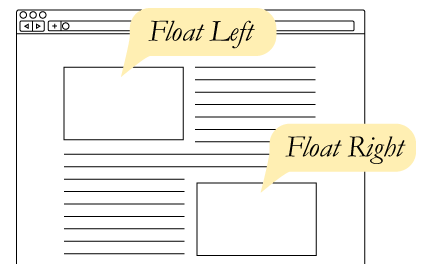

CSS Layout
floats
Floats were part of the CSS Level 1 spec in 1996. They began to be used on websites for layout around 2001 but didn't really catch on until 2004ish.
float was not intended overall page layout. The float property was intended for floating content and having other content flow around it.

Image from: css-tricks.com
So if we want to use it for layout we will have to deal with clearing the floats. This can get tedious when creating responsive layouts - nth-child().